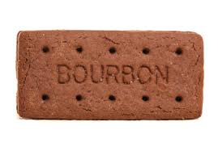

The Bourbon biscuit (/ˈbʊrbən/) is a sandwich style biscuit consisting of two thin rectangular dark chocolate–flavoured biscuits with a chocolate buttercream filling.
Did you know?... A 2009 survey found that the Bourbon biscuit was the fifth most popular biscuit in the United Kingdom for dunking into tea!
| Main Flavour | Chocolate |
| Filling? | Yes- Chocolate |
| Best Paired With | Tea |
| Price Point | $ |
| Suitable for vegetarians? | Yes! |